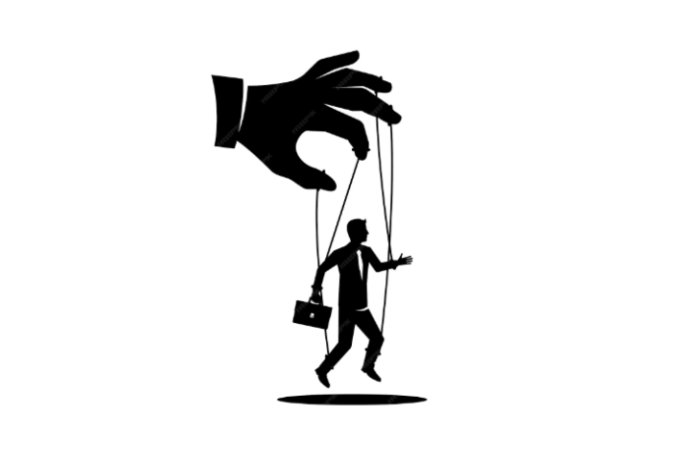
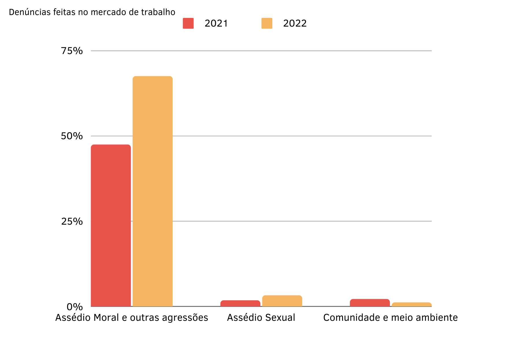
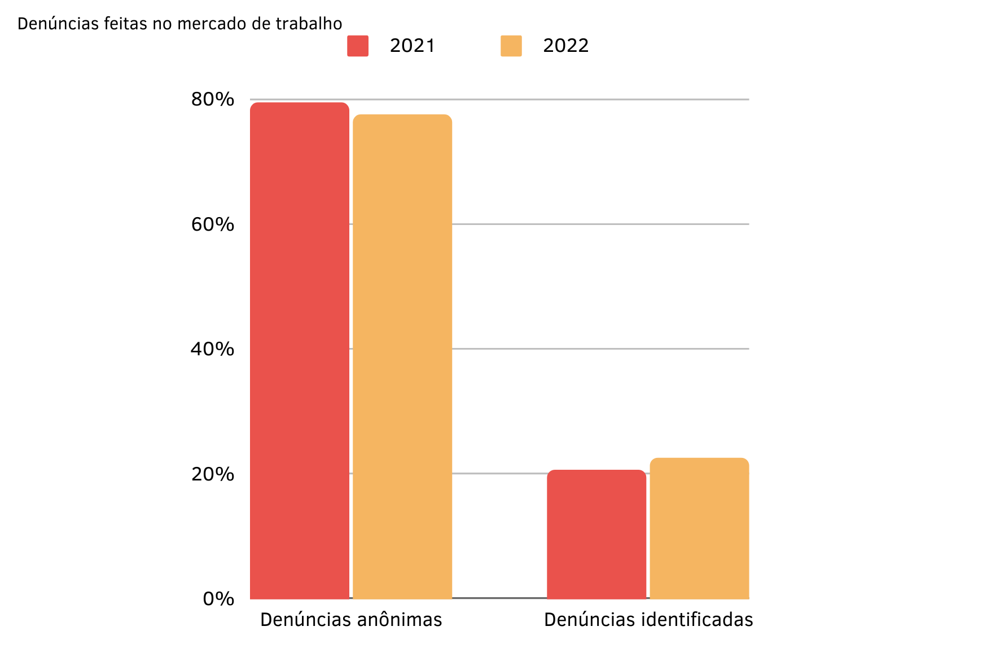
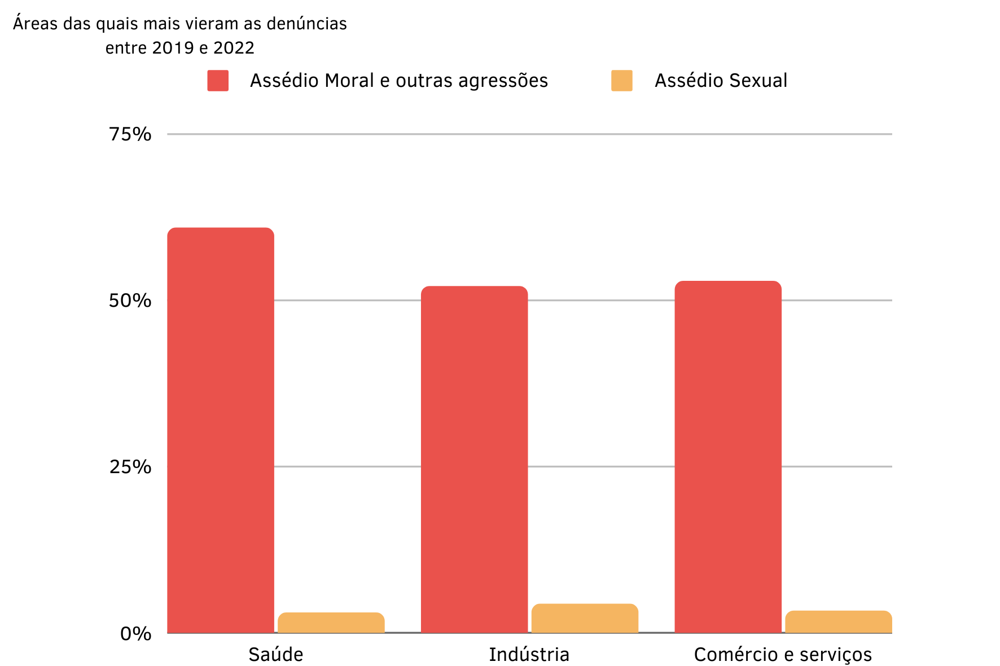

Abuso de Poder
Muitos passamos por isso e não percebemos, como podemos mudar?
Maria*, uma arquiteta concursada que trabalha em uma prefeitura de uma pequena cidade da região há 23 anos, relata a difícil situação no seu trabalho,“Já sofri de abuso de poder muitas vezes”, ela diz.
Continuou então dizendo, “Vivo isso com frequência no trabalho, com chefias que querem usar da sua posição de cargo de Comissão para tirar vantagens para si mesmo e tentaram me coagir a ajudar. Que tentaram ter acessos a documentos restritos que eu tenho acesso e eles não, pediram para fechar buracos na rua em que eles moram, quando temos muitas outras que são prioridade, ou até aprovar projetos que não estão de acordo com a Legislação.” Assim como ela, diversos trabalhadores passam pelo mesmo em seus ambientes de trabalho. Ameaça de demissão, imposição de cargas desproporcionais, manipulação ou uso de informações confidenciais, discriminação, assédio sexual, assédio moral, autoridade imprópria, favoritismo, ameaças em geral, tudo isso é considerado abuso de poder, pois viola os direitos trabalhistas e humanos.
De acordo com o Artigo 5°, Inciso X da Constituição Federal Brasileira de 1988: “São invioláveis a intimidade, a vida privada, a honra e a imagem das pessoas, assegurado o direito a indenização pelo dano material ou moral decorrente de sua violação;” Por isso, quando se sofre um caso de abuso de poder, deve-se denunciar para as autoridades, como o Ministério Público do Trabalho, Ministério Público Estadual ou a Justiça do Trabalho. Pois, é considerado crime e qualquer um que pratique essas ações é sujeito a pena, variando de multa, prisão por 6 meses, perda do cargo e inabilitação de aplicar para trabalhos públicos por 3 anos. Após dois anos com mais de 5 000 denúncias em cada ano, resolveram fazer um levantamento de dados, dos anos de 2021 e 2022, em relação às denúncias feitas nos respectivos anos.
Como podemos observar no gráfico acima, de 2021 para 2022, o número de denúncias de assédio moral e outras agressões, cresceu 48,25%, as denúncias de assédio sexual, cresceram 81,62%, apesar do número ter crescido, não sabemos se de fato o número de casos cresceu ou não, só que os trabalhadores tem se sentido mais confortaveis e confiantes para denúnciar o que acontece em seus empregos, facilitando o combate desse tipo de situação. No gráfico abaixo, temos dados do mesmo levantamento, mas ao invés de ser sobre o tipo de denúncia, vemos se ela foi feita de forma anônima ou não. De 2021 para 2022 o número de denúncias identificadas cresceu e consequentemente o número de denúncias anônimas diminuiu. Apesar de não ser um número significativo, já podemos observar uma mudança de comportamento dos trabalhadores em relação ao abuso de poder, mostrando que cada vez mais eles têm consciência do que é e de como combatê-lo.
 Em outra pesquisa feita, temos as áreas do mercado de trabalho que mais fizeram denúncias de abuso de poder nos últimos 3 anos. Ao analisá-lo, podemos ver que a área da saúde é a que mais tem denúncias de assédio moral e outras agressões, com 60,84% das suas denúncias sendo sobre isso, e a área da indústria é a que mais tem denúncias de assédio sexual, sendo 4,37% de suas denúncias sobre isso.
“6 a cada 10 pessoas já viram ou passaram por uma situação de abuso de poder”
Para podermos analisar melhor a situação do local em que vivemos e o ambiente em que estamos no nosso dia-a-dia, realizamos entrevistas com 10 pessoas, trabalhadores da Unisinos, local onde se situa a nossa escola, membros do corpo docente do Senac RS, estudantes e, é claro, familiares nossos.
Durante as entrevistas perguntamos se os entrevistados já haviam visto ou passado por uma situação de abuso de poder, 6 dos 10 entrevistados responderam que sim, sendo 3 desses 6 tendo dito que não somente viram uma situação desse tipo, como também sofreram casos de abuso de poder. Logo após, perguntamos o que eles pensavam sobre o favoritismo no mundo do trabalho, e todos responderam que notavam que está presente e que acham extremamente errado, mas uma de nossas entrevistadas respondeu que acha que pode ser tolerado se for comprovado a capacidade do indivíduo em questão. Então questionamos as pessoas se eles pensam ser correto ameaçar funcionários de demissão, e novamente todos disseram que pensam ser um comportamento errado e abusivo da parte de qualquer superior. Nossas duas últimas perguntas foram o que eles pensam que classificaria um caso de abuso de poder e o que eles acham que deve ser feito ao sofrer um caso como esse, e todos responderam que abuso de poder é classificado como um ato abusivo de um superior ou alguém utilizar sua influência para tirar vantagem do outro e que ao passar por isso, devem denunciar a autoridades competentes e sempre pedir ajuda. Como dito antes, essas entrevistas foram feitas com pessoas de nosso convívio diário, entrevistamos pessoas que estão presentes no mercado de trabalho ou que entrarão nele em breve, desde cargos de trabalhos manuais até advogados e arquitetos. Podemos ver que o abuso do poder não se limita somente a cargos de alto escalão, e sim, a todos os trabalhadores.
“No mercado de trabalho, infelizmente todos passam por situações também”
Maria*, ressaltou isso no fim de sua entrevista, “devemos sempre resistir, não abaixar a cabeça, sempre firmes com nossas opiniões e principalmente caráter. Ninguém me convence a fazer o que eu acho de natureza duvidosa, ilegal ou imoral. Ninguém!”, continuou. O combate ao abuso de poder pode ser difícil, entre denúncias, registro de evidências e buscas por advogados, os trabalhadores que sofrem com isso podem desenvolver diversos problemas físicos e psicológicos, afetando a motivação, relações interpessoais, criatividade e muitas outras coisas. Dentre nossas pesquisas e entrevistas, chegamos a conclusão que os trabalhadores não devem se deixar afetar, todos são mais fortes juntos, todos passam pelo mesmo, talvez em intensidades diferentes e momentos diferentes, mas se tiverem apoio, conseguem combater o abuso de poder. A comunicação é a chave de tudo, para se ter um ambiente de trabalho saudável, é bom confiarem uns nos outros.
*Nome fictício